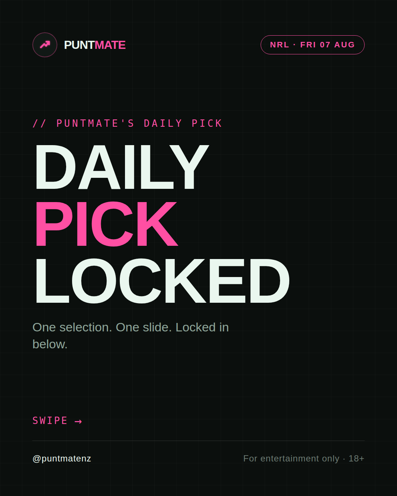
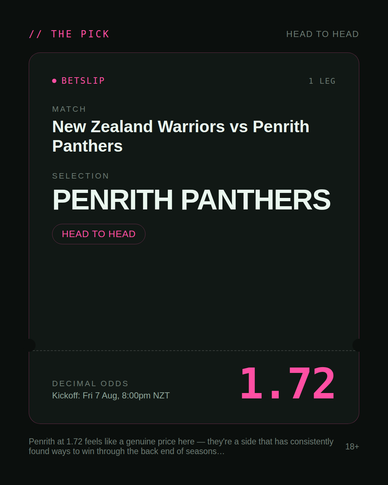
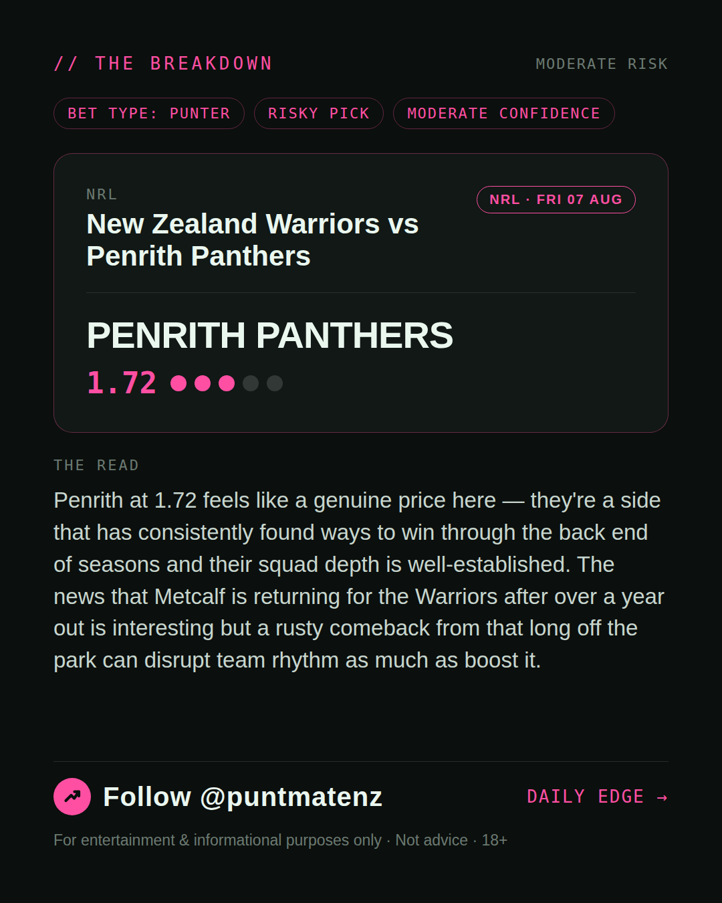
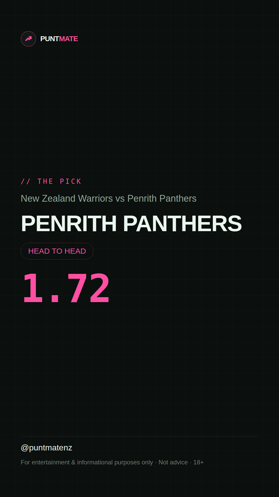

*🎯 PUNTMATE NZ — NRL* 🏟 New Zealand Warriors vs Penrith Panthers *PICK:* PENRITH PANTHERS *ODDS:* 1.72 (Head to Head) *BET TYPE: PUNTER* _Penrith at 1.72 feels like a genuine price here — they're a side that has consistently found ways to win through the back end of seasons and their squad depth is well-established. The news that Metcalf is returning for the Warriors after over a year out is interesting but a rusty comeback from that long off the park can disrupt team rhythm as much as boost it._ ────────────────── 📲 Join Telegram for daily picks ⚠️ For entertainment & informational purposes only. Not advice. 18+.
🎯 NRL — New Zealand Warriors vs Penrith Panthers PENRITH PANTHERS @ 1.72 (Head to Head) BET TYPE: PUNTER Solid touch here. Not a lock, but the value's real and the form backs it up. Penrith at 1.72 feels like a genuine price here — they're a side that has consistently found ways to win through the back end of seasons and their squad depth is well-established. The news that Metcalf is returning for the Warriors after over a year out is interesting but a rusty comeback from that long off the park can disrupt team rhythm as much as boost it. Follow for daily value picks → @puntmatenz ⚠️ For entertainment & informational purposes only. Not advice. 18+. #PuntmateNZ #SportsBetting #NZTAB #NRL
| has_pick | True |
| pick_id | 2026-08-07_New_Zealand_Warriors_vs_Penrith_Panthers |
| run_id | 31135382908 |
| generated_at | 2026-08-07T00:41:32.530639+00:00 |
| post_date | 2026-08-07 |
| match | New Zealand Warriors vs Penrith Panthers |
| sport | rugbyleague_nrl |
| sport_label | NRL |
| market | Head to Head |
| selection | PENRITH PANTHERS |
| odds | 1.72 |
| bet_type | PUNTER_BET |
| bet_type_label | BET TYPE: PUNTER |
| bet_type_reason | Solid touch here. Not a lock, but the value's real and the form backs it up. Penrith at 1.72 feels like a genuine price here — they're a side that has consistently found ways to win through the back end of seasons and their squad depth is well-established. The news that Metcalf is returning for the Warriors after over a year out is interesting but a rusty comeback from that long off the park can disrupt team rhythm as much as boost it. |
| classification | RISKY_PICK |
| risk | RISKY_PICK |
| confidence | MODERATE |
| confidence_label | MODERATE |
| final_explanation | Penrith at 1.72 feels like a genuine price here — they're a side that has consistently found ways to win through the back end of seasons and their squad depth is well-established. The news that Metcalf is returning for the Warriors after over a year out is interesting but a rusty comeback from that long off the park can disrupt team rhythm as much as boost it. |
| public_caution | Keep this one light — the value's there but so is the uncertainty. |
| theme | night |
| carousel_paths | ['data/review/2026-08-07_New_Zealand_Warriors_vs_Penrith_Panthers/cover.png', 'data/review/2026-08-07_New_Zealand_Warriors_vs_Penrith_Panthers/tip.png', 'data/review/2026-08-07_New_Zealand_Warriors_vs_Penrith_Panthers/breakdown.png'] |
| carousel_urls | ['https://raw.githubusercontent.com/kingofthecastle24/puntmate/main/data/cards/2026-08-07_New_Zealand_Warriors_vs_Penrith_Panthers_night_1_cover.png', 'https://raw.githubusercontent.com/kingofthecastle24/puntmate/main/data/cards/2026-08-07_New_Zealand_Warriors_vs_Penrith_Panthers_night_2_tip.png', 'https://raw.githubusercontent.com/kingofthecastle24/puntmate/main/data/cards/2026-08-07_New_Zealand_Warriors_vs_Penrith_Panthers_night_3_breakdown.png'] |
| story_path | data/review/2026-08-07_New_Zealand_Warriors_vs_Penrith_Panthers/story.png |
| story_url | https://raw.githubusercontent.com/kingofthecastle24/puntmate/main/data/cards/2026-08-07_New_Zealand_Warriors_vs_Penrith_Panthers_night_story.png |
| intended_platforms | ['telegram', 'instagram_feed', 'instagram_story', 'facebook'] |
| workflow_state | GENERATED |
| has_punter_multi | False |
| has_gambler_multi | False |
| has_degenerate_multi | False |